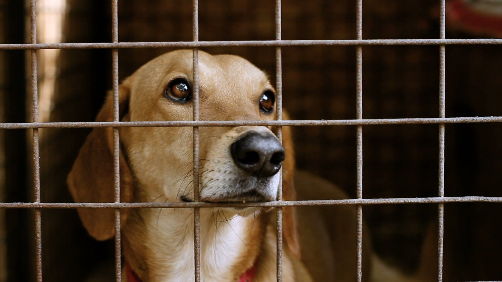
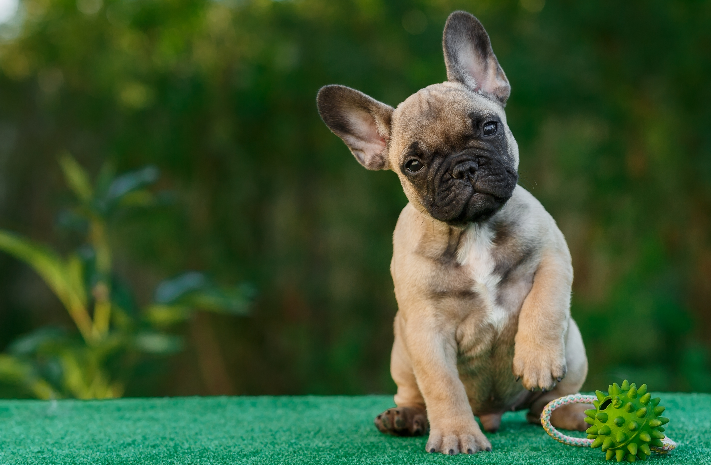

Mission
In addition to providing beterinary care to local communities, Rescue A Rescue provides
rehabilitation, and re-homing services to domestic animals.Our mission as a registered,
non-profit organization committed to bringing relief to animals in distress is made possible by
the support of caring individuals and corporate entities.

Vision
Our goal is to continue saving more and more animals every year and to encourage and support
other shelters in a united mission.We want to continue to provide educational programs to the
public that demonstrate compassion and respect for all living creatures.We will research and
develop new innovative ways that improve the human/animal bond and the benefits of having a
furry companion in your life.

History
Rescue a rescue is a new non-profit that started with only 3 friends that had a passion for
taking care of animals. This then turn into a foundation that helps struggling animals in and
around Johannesburg. The foundation started in 2021 and has been improving the lives of
suffering animals tremendously and we strive to keep improving.